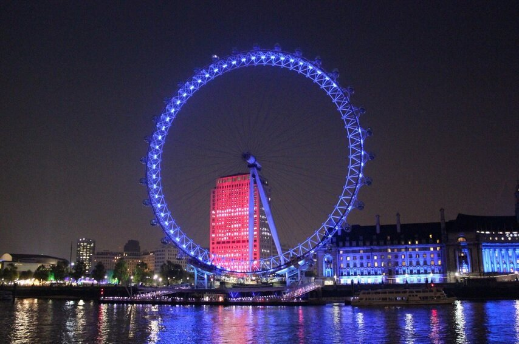
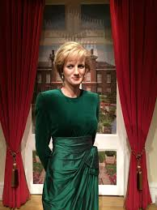

Palácio de Westminster – Big Ben

O Palácio de Westminster abriga o Parlamento do Reino Unido e,
em sua torre, um dos maiores ícones de Londres e da Inglaterra,
o Big Ben. Esse cartão postal da cidade merece mais do que uma
foto à distância: visite por dentro.
London Eye
A London Eye é a terceira maior roda gigante do mundo e um dos
pontos turísticos mais disputados de Londres. Oferece uma vista
inigualável da cidade, em um voo sobre Westminster, de cara para
o Rio Tâmisa e para o Big Ben.
Museu de Cera Madame Tussauds
O Madame Tussauds é uma rede de museus famosa em todo o mundo por
criar bonecos de cera de personalidades das artes, da política, da cultura.
O primeiro museu foi criado aqui em Londres, e a visita rende muitas fotos e risadas.